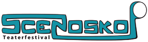

BILLETTER
Alle forestillinger på Scenoskop Teaterfestival er gratis.
Men hvis du vil være sikker på at få en plads, kan du hente
en billet via ticketeasy. Det kræver selvfølgelig, at du kan komme på
nettet med din mobil telefon.
Udover her på siden findes der også en billet knap ved hver
forestilling i menuenpunktet FORESTILLINGER. Via knappen kommer du til
hele Scenoskops billetbestilling.
Du kan også gå direkte til den enkelte forestilling for at bestille, ved at klikke på linket Billet udfor hver enkelt forestilling.